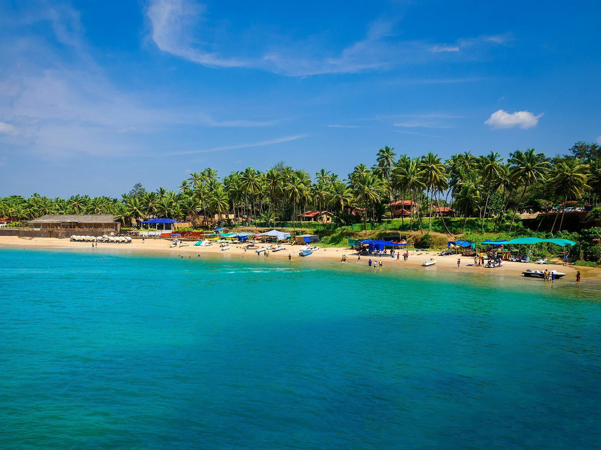
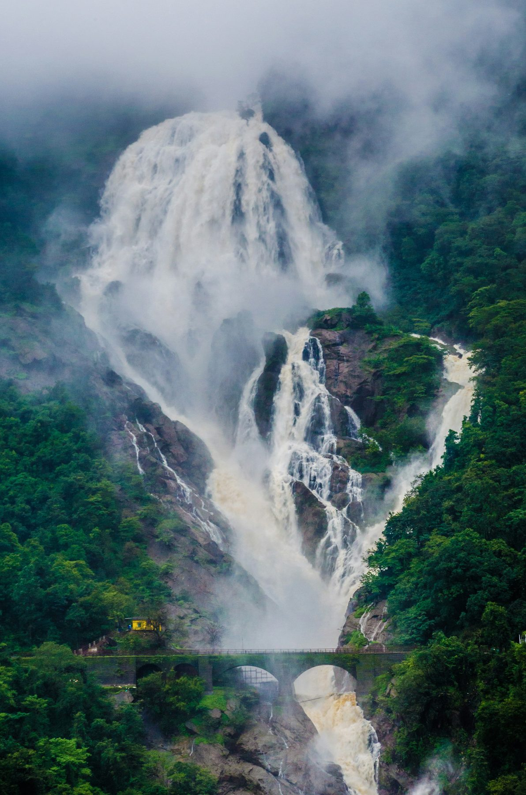
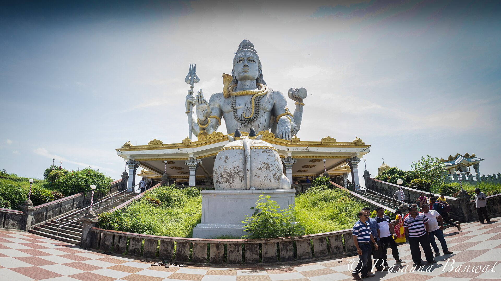
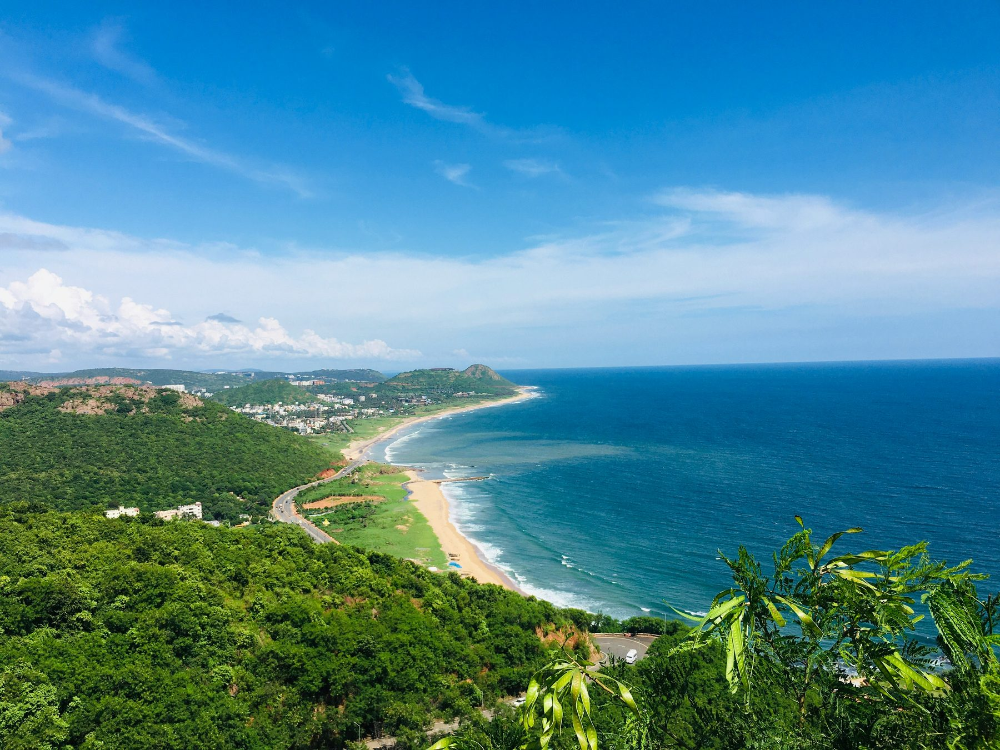

12 destinations found

Delhi, Mathura, Vrindavan & Agra
Imperial Delhi, Krishna's temple towns, and the Taj Mahal in one heritage circuit.

Varanasi
The living spiritual capital on the banks of the Ganges.

Rishikesh
Riverside yoga towns and sacred teachings in the Himalayan foothills.

Agra
Home to the Taj Mahal and Mughal grandeur along the Yamuna.

Hampi
Ruined splendour of the Vijayanagara Empire among boulder-strewn hills.

Leh Ladakh
High-altitude deserts, turquoise lakes, and Himalayan monasteries.

Spiti Valley
Cold-desert monasteries, high villages, and Chandratal Lake.

Shimla, Manali & Kasol
Colonial hill towns, Solang Valley, and Parvati Valley cafes in one trail.

Chardham
The sacred circuit of Yamunotri, Gangotri, Kedarnath & Badrinath.

Munnar
Rolling carpets of tea across the Western Ghats.

Alleppey
The Venice of the East — palm-fringed canals and houseboats.
Kochi, Munnar, Thekkady & Alleppey
Colonial Kochi, tea hills, wildlife forests, and a backwater houseboat night.

Kochi, Munnar, Thekkady, Alleppey & Kovalam
The classic Kerala circuit extended to a beach finish at Kovalam.

Grand Kerala Circuit
The complete trail — hills, backwaters, beaches, and the capital's temple heritage.

North Goa & South Goa
Buzzing beaches and forts up north, quiet coves and churches down south.

North Goa, South Goa & Dudhsagar
The classic Goa circuit extended inland to a jungle waterfall safari.
.jpg?width=500)
Jaipur, Jodhpur, Jaisalmer, Udaipur, Pushkar & Mount Abu
The complete Rajasthan circuit — palaces, forts, desert dunes, and lakeside towns.

Mysore
The royal city of palaces, silk, and sandalwood.

Coorg
Misty coffee country in the Western Ghats.

Gokarna & Murudeshwar
Mahabaleshwar Temple, Om and Kudle beaches, and Murudeshwar's giant Shiva statue on Karnataka's coast.

Ooty
The Queen of Hill Stations — toy trains and tea gardens.

Tamil Nadu Temple Trail
Madurai, Rameswaram, Kanyakumari, Srirangam & Thanjavur in one circuit.

Pondicherry
Pastel French Quarter streets meet the Bay of Bengal.

Kedarnath & Badrinath
The two most revered shrines of the Chardham, deep in the Garhwal Himalayas.

Tungnath & Chandrashila
The world's highest Shiva temple and the summit trek above it.

Rishikesh & Haridwar
Twin holy towns on the Ganges, where the river meets the plains.

Valley of Flowers
A UNESCO World Heritage Site famous for vibrant alpine flowers and Himalayan beauty.

Srinagar
The summer capital of Kashmir — Dal Lake, Mughal gardens, and houseboats.

Gulmarg
The Meadow of Flowers — cable cars, ski slopes, and pine forests.

Pahalgam
The Valley of Shepherds — the Lidder River and Betaab Valley.

Sonmarg
The Meadow of Gold — the Sindh River and Thajiwas Glacier.

Vaishno Devi
One of India's most-visited pilgrimages, deep in the Trikuta Hills.

Lakshadweep
Coral atolls and turquoise lagoons across Agatti, Bangaram, Kavaratti & Minicoy.

Vizag & Araku Valley
Beach promenades and hilltop viewpoints, then coffee hills across the Eastern Ghats.

Tawang & the Monastery Circuit
Bomdila, Dirang, Tawang, Bum La Pass & Madhuri Lake in the Buddhist Himalayas.
No destinations match your search and filters — try another name, season or state.